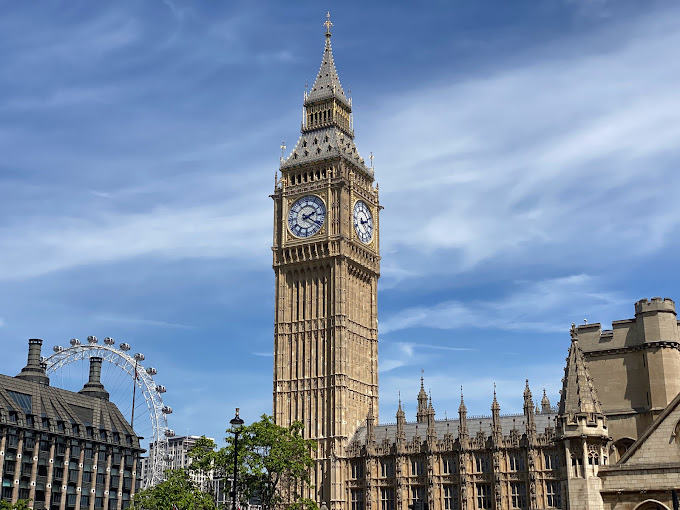

Cujo nome oficial é Anfiteatro Flaviano, começou a ser construído em 72 d.C e demorou oito anos para ficar pronto.
A construção, de concreto e areia, foi comandada pelo imperador Flávio Vespasiano – homenageado pelo filho Tito, que governava Roma quando as obras acabaram.

A construção de cerca de 300 metros de altura e dez mil toneladas que se tornou símbolo da capital francesa é capaz de dar um ar romântico a qualquer viagem.
A Torre Eiffel foi construída para a Exposição Universal de 1889,
que celebrava os 100 anos da Revolução Francesa.
Uma competição de design arquitetônico selecionou o projeto do engenheiro Gustave Eiffel,
que projetou o monumento como arco de entrada da exposição, no Champ de Mars.

Em construção há 135 anos, a Sagrada Família deve ficar pronta somente em 2026, mas há muito tempo atrai visitantes de todo o mundo,
que enfrentam filas intermináveis para conhecer a edificação. A basílica que se tornou um
dos principais pontos de visitação para quem vai à Barcelona começou como um projeto neogótico de Francisco de Paula del Villar e Lozano.
Conhecido por sua absoluta precisão, o relógio parou pouquíssimas vezes desde sua inauguração em 1859. Nem mesmo a bomba que atingiu o parlamento durante a Segunda Guerra Mundial fez com que ele deixasse de marcar as horas.
Considerada Patrimônio Cultural da Humanidade pela Unesco, a edificação foi construída entre 1514 e 1520 às margens do Rio Tejo.
O monumento teve importante função: começou como projeto de construção defensiva na época de Dom João II,
depois substituiu a nau artilhada ancorada nas águas do Rio Tejo durante o reinado de Manuel I e foi utilizada como aduaneiro, sinalização,
farol e até masmorra para presos políticos nos anos seguintes. A arquitetura sofreu influências islâmicas e
de estilo manuelino, com elementos que remetem ao período das grandes navegações. A fachada é rica em detalhes, com adornos, cruzes e o escudo real de Dom Manuel I.

Hoje sinônimo de paz e unidade, o Portão de Brandemburgo já foi símbolo de divisão entre a Alemanha Oriental e a Ocidental, durante a Guerra Fria.
O monumento de 26 metros de altura, construído entre 1788 e 1791, teve como inspiração arquitetônica a
entrada da Acrópole de Atenas. Foi idealizado pelo rei Friedrich Wilhelm II, da Prússia, e planejado por Carl Gotthard Langhans para celebrar o triunfo na guerra pelos prussianos.
Os museus são um dos grandes atrativos da Europa e, muitas vezes, é preciso fazer uma maratona pela cidade para percorrer todos os que você quer ver.
Mas e se os principais museus de uma cidade estivessem em um único lugar? Assim é a Museumplein,
a praça dos museus, em Amsterdam.